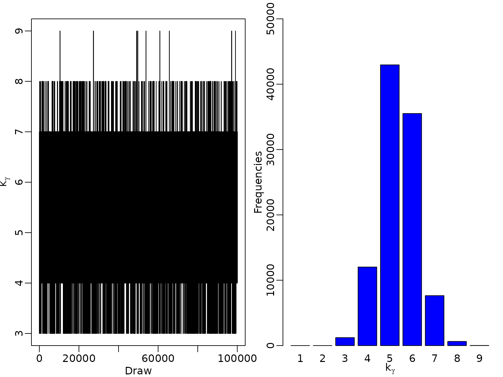
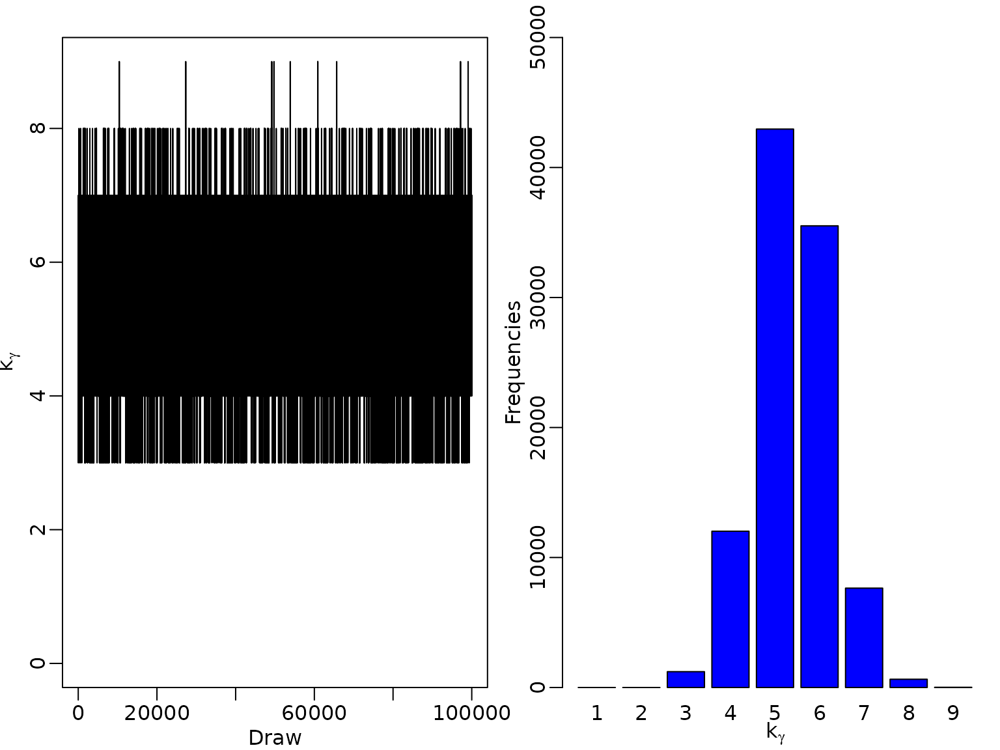
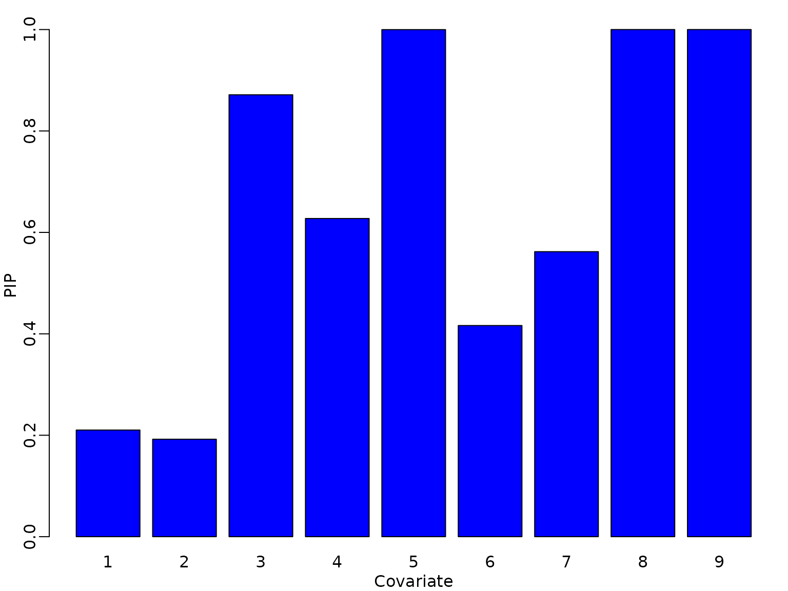
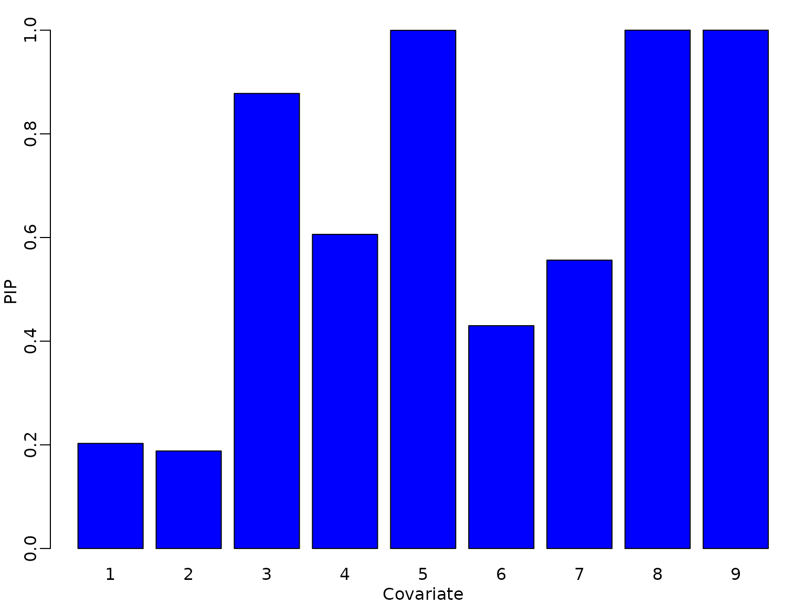
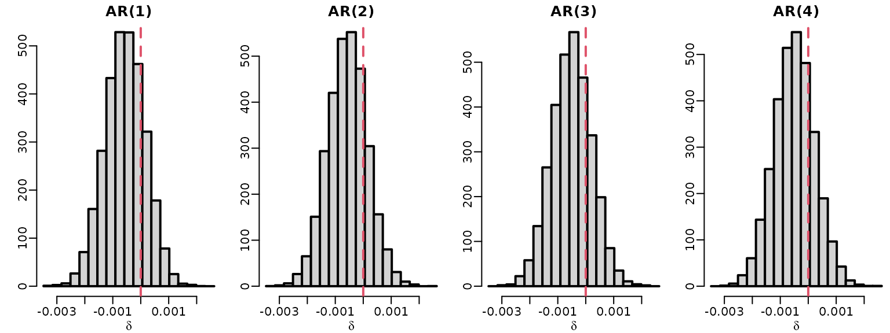
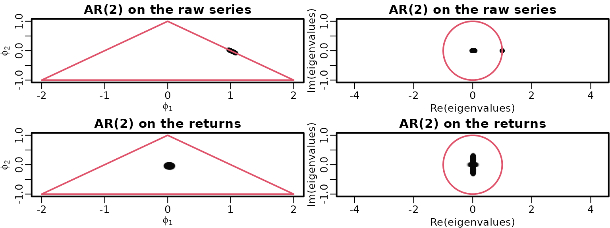
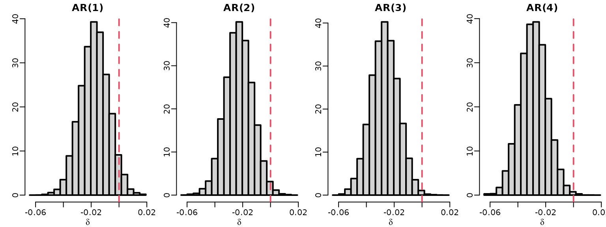
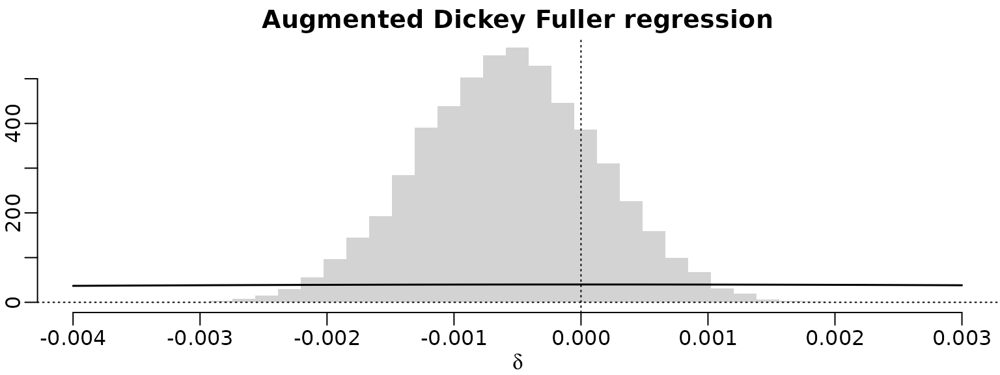

Chapter 11: Bayesian Model Selection in Regression and Time Series Analysis
Chapter11.RmdSection 11.2: Variable selection in standard regression analysis
Section 11.2.1: Bayesian variable selection
Example 11.3: Movie data: Full enumeration marginal likelihoods
We write a function that computes the marginal likelihoods for models defined by indicator vectors.
logmarlik_reg <- function(y,X, a0, A0, B0, c0, C0, gammas){
N <- length(y)
cN <- c0 + N / 2
const <- (- N / 2) * log(2*pi) + lgamma(cN) - lgamma(c0) + c0 * log(c0)
nmod <- dim(gammas)[1]
p <- dim(gammas)[2]
lmarlik <- rep(NA,nmod)
for (i in 1:nmod){
gamma <- gammas[i,]
k_gamma <- sum(gamma)
if (k_gamma==0){
X_gamma <- as.matrix(rep(1, N))
b0v <- t(as.vector(a0))
B0v.inv<- as.matrix(1/A0)
}else{
X_gamma <- as.matrix(cbind(rep(1, N), X[,gamma==1] ))
b0v <- c(a0,rep(0,k_gamma))
B0v.inv <- diag(c(1/A0,rep(1/B0,k_gamma)) )
}
BNv.inv <- B0v.inv + crossprod(X_gamma)
BNv <- solve(BNv.inv)
bNv <- BNv %*% (crossprod(X_gamma, y) + B0v.inv%*% b0v )
SSE <- as.numeric(crossprod(y) + t(b0v) %*% B0v.inv %*% b0v -
t(bNv) %*% BNv.inv %*% bNv)
CN <- C0 + SSE / 2
lmarlik[i] <- const - cN * log(CN) +
0.5 *( log(det(BNv)) + log(det(B0v.inv)) )
}
return(lmarlik)
}We load the data and choose covariates Budget, Screens and Comedy which we center at their means, and define the indicators for all models
# Example 11.2
library("BayesianLearningCode")
data("movies", package = "BayesianLearningCode")
y <- movies[, "OpenBoxOffice"]
covs <- c("Budget", "Screens","Comedy")
covs.cen <- scale(movies[, covs], scale = FALSE) # center the covariates
gammas <- cbind(c(rep(0,4),rep(1,4)),rep(c(rep(0,2), rep(1,2)),2),
rep(c(0,1),4)) Next we choose the prior parameters and compute the log marginal likelihoods.
a0=0
A0=10000
B0=1
c0 = 2.5
C0 = 1.5
logmarliks <- logmarlik_reg(y, covs.cen, a0, A0, B0, c0, C0, gammas) Finally, we compute the model probabilities for a uniform prior on the model space.
prob <- 1 / dim(gammas)[1]
h <- exp(logmarliks - max(logmarliks))
cM <- prob * sum(h)
model_probs <- prob * h / cM
knitr::kable(cbind(gammas, logmarliks, model_probs),
digits = c(rep(0, ncol(gammas)), 1, 3))| logmarliks | model_probs | |||
|---|---|---|---|---|
| 0 | 0 | 0 | -427.7 | 0.000 |
| 0 | 0 | 1 | -429.3 | 0.000 |
| 0 | 1 | 0 | -413.9 | 0.612 |
| 0 | 1 | 1 | -414.5 | 0.339 |
| 1 | 0 | 0 | -426.1 | 0.000 |
| 1 | 0 | 1 | -427.7 | 0.000 |
| 1 | 1 | 0 | -416.8 | 0.034 |
| 1 | 1 | 1 | -417.6 | 0.015 |
We next perform model selection also for the standardized covariates.
covs.std <- scale(movies[, covs], scale = TRUE)
logmarliks <- logmarlik_reg(y, covs.std, a0, A0, B0, c0, C0, gammas)
h <- exp(logmarliks - max(logmarliks))
cM <- prob * sum(h)
model_probs <- prob * h / cM
knitr::kable(cbind(gammas, logmarliks, model_probs),
digits = c(rep(0, ncol(gammas)), 1, 3))| logmarliks | model_probs | |||
|---|---|---|---|---|
| 0 | 0 | 0 | -427.7 | 0.000 |
| 0 | 0 | 1 | -430.0 | 0.000 |
| 0 | 1 | 0 | -412.5 | 0.373 |
| 0 | 1 | 1 | -413.7 | 0.105 |
| 1 | 0 | 0 | -423.2 | 0.000 |
| 1 | 0 | 1 | -425.5 | 0.000 |
| 1 | 1 | 0 | -412.3 | 0.429 |
| 1 | 1 | 1 | -413.8 | 0.093 |
Section 11.2.2: Model space MCMC
Example 11.4: Movie data: Model space MCMC
We start by implementing the model space MH algorithm and a function that computes the frequencies different models are visited.
modelspace_mh <- function(y,X, a0, A0, B0, c0, C0,
burnin = 1000L, M = 5000L){
p<-dim(X)[2] # change to X later
gamma_post <- matrix(ncol = p, nrow = M)
acc <- numeric(length = M)
gamma <- matrix(rep(1,p),nrow=1)
lmarlik_old <-logmarlik_reg(y,X, a0, A0, B0, c0, C0, gamma)
for (m in seq_len(burnin + M)) {
gamma_proposed <- gamma_old <- gamma
j <- sample(1:p, size=1)
gamma_proposed[j] <- 1-gamma_old[j]
lmarlik_proposed <-logmarlik_reg(y,X, a0, A0, B0, c0, C0, gamma_proposed)
# compute acceptance probability and decide on acceptance
log_acc <- lmarlik_proposed - lmarlik_old
if (log(runif(1)) < log_acc) {
gamma <- gamma_proposed
lmarlik_old <- lmarlik_proposed
accept <- 1
} else {
gamma <- gamma_old
accept <- 0
}
if (m > burnin) {
gamma_post[m-burnin, ] <- gamma
acc[m-burnin] <- accept
}
}
return(list(gamma_post=gamma_post,acc=acc))
}
number_draws<- function(gamma_post, models){
nmod <- dim(models)[1]
freq <- rep(NA,nmod)
for (j in (1:nmod)){
freq[j] <- sum(apply(gamma_post, 1,
function(x) identical(x, models[j,])))
}
return(freq)
}We run the MH algorithm and compute how often each model is visited.
set.seed(seed)
M <- 50000
res <- modelspace_mh(y, covs.cen, a0, A0, B0, c0, C0, M = M)
model_freq <- number_draws(res$gamma_post, gammas)
knitr::kable(cbind(gammas, model_freq, model_freq / M),
digits = c(rep(0, ncol(gammas)), 0, 3))| model_freq | ||||
|---|---|---|---|---|
| 0 | 0 | 0 | 0 | 0.000 |
| 0 | 0 | 1 | 0 | 0.000 |
| 0 | 1 | 0 | 30553 | 0.611 |
| 0 | 1 | 1 | 17098 | 0.342 |
| 1 | 0 | 0 | 0 | 0.000 |
| 1 | 0 | 1 | 0 | 0.000 |
| 1 | 1 | 0 | 1638 | 0.033 |
| 1 | 1 | 1 | 711 | 0.014 |
Finally, we compute the PIPs.
p <- dim(gammas)[2]
PIP <- rep(NA,p)
for (j in (1:p)){
PIP[j]=sum(model_freq[gammas[,j]==1])/M
}
print(PIP)
#> [1] 0.04698 1.00000 0.35618We run model space MCMC and compute PIPs also for the standardized covariates.
set.seed(seed)
res <- modelspace_mh(y, covs.std, a0, A0, B0, c0, C0, M = M)
model_freq <- number_draws(res$gamma_post, gammas)
knitr::kable(cbind(gammas, model_freq, model_freq / M),
digits = c(rep(0, ncol(gammas)), 0, 3))| model_freq | ||||
|---|---|---|---|---|
| 0 | 0 | 0 | 0 | 0.000 |
| 0 | 0 | 1 | 0 | 0.000 |
| 0 | 1 | 0 | 18561 | 0.371 |
| 0 | 1 | 1 | 5449 | 0.109 |
| 1 | 0 | 0 | 0 | 0.000 |
| 1 | 0 | 1 | 0 | 0.000 |
| 1 | 1 | 0 | 21111 | 0.422 |
| 1 | 1 | 1 | 4879 | 0.098 |
Section 11.2.3: Benchmark priors for comparing regression models
We again start writing a function that
varselreg_gunif<- function(y, X, pri=NA, burnin=1000L, M=50000L){
N=length(y)
p <- dim(X)[2]
g <- N
gamma_post <- matrix(ncol = p, nrow = M)
kgamma_post <- numeric(length = M)
acc <- numeric(length = M)
gamma_old <- matrix(rep(1,p),nrow=1)
k_gamma=sum(gamma_old)
X_gamma <- X
BN_gamma <- solve( ((1+g)/g) * crossprod(X_gamma) )
R2_gamma <- t(y)%*%X_gamma%*%BN_gamma%*%t(X_gamma)%*%y / (N*var(y))
lmarlik_old <- (N-k_gamma-1)/2*log(1+g) -(N/2) * log(1+g*(1-R2_gamma) )
for (m in seq_len(burnin + M)) {
gamma_proposed <- gamma_old
j <- sample(1:p, size=1)
gamma_proposed[j] <- 1-gamma_old[j]
kgamma <- sum(gamma_proposed)
if (kgamma==0){
R2_gamma <- 0
}else{
X_gamma <- X[,gamma_proposed==1]
BNinv_gamma <- ((1+g)/g) * crossprod(X_gamma)
BN_gamma <- solve( BNinv_gamma)
R2_gamma <- t(y) %*% X_gamma %*% BN_gamma %*% t(X_gamma) %*% y / (N*var(y))
}
lmarlik_proposed <- (N-kgamma-1)/2*log(1+g) -
(N-1)/2 * log(1+g*(1-R2_gamma) )
# compute acceptance probability and accept or not
log_acc <- lmarlik_proposed - lmarlik_old
if (log(runif(1)) < log_acc) {
gamma_old <- gamma_proposed
lmarlik_old <- lmarlik_proposed
accept=1
} else {
accept=0
}
if (m > burnin) {
gamma_post[m-burnin, ] <- gamma_old
kgamma_post[m-burnin] <- sum(gamma_old)
acc[m-burnin] <- accept
}
}
return(list(gamma_post=gamma_post,acc=acc))
}As a first exercise we apply the g-prior to the model with the centered covariates used above.
set.seed(seed)
res_cen<-varselreg_gunif(y, covs.cen, M=100000)
print(colMeans(res_cen$gamma_post))
#> [1] 0.43680 1.00000 0.19064
gammas_unique<-unique(res_cen$gamma_post)
freq_gammas<-number_draws(res_cen$gamma_post,gammas_unique)
print(cbind(gammas_unique,freq_gammas))
#> freq_gammas
#> [1,] 1 1 0 36325
#> [2,] 0 1 0 44611
#> [3,] 0 1 1 11709
#> [4,] 1 1 1 7355
res_std <- varselreg_gunif(y, covs.std, M=100000)
print(colMeans(res_std$gamma_post))
#> [1] 0.44254 0.99994 0.18799
gammas_unique <- unique(res_std$gamma_post)
freq_gammas<-number_draws(res_std$gamma_post,gammas_unique)
print(cbind(gammas_unique,freq_gammas))
#> freq_gammas
#> [1,] 0 1 1 11338
#> [2,] 0 1 0 44408
#> [3,] 1 1 0 36788
#> [4,] 1 1 1 7460
#> [5,] 1 0 0 5
#> [6,] 1 0 1 1We see that results are very similar as the g-prior takes into account the scale of the covariates.
Example 11.6: Movie data: Applying the g-prior
We now use all covariates from example 6.7 except the categorical variable MMPA rating.
covs <- c("Comedy", "Thriller", "Budget", "Weeks", "Screens",
"S-4-6", "S-1-3", "Vol-4-6", "Vol-1-3")
covs.cen <- scale(movies[, covs], scale = FALSE)
M <- 100000
p <- dim(covs.cen)[2]
set.seed(seed)
res_gunif<-varselreg_gunif(y, covs.cen,M=M )We show the PIPs in a barplot and compute the estimated posterior probabilities of all models visited during MCMC.
if (pdfplots) {
pdf("11-2_2a.pdf", width = 3, height = 3)
}
par(mfrow = c(1, 1), mar = c(2.5, 2.5, 1.5, .5), mgp = c(1.5, .5, 0))
barplot(colMeans(res_gunif$gamma_post), col="blue",names.arg=1:p,
xlab="Covariate",ylab="PIP")
gammas_unique <- unique(res_gunif$gamma_post)
nmod <- dim(gammas_unique)[1]
print(nmod)
#> [1] 67
freq_gammas<-number_draws(res_gunif$gamma_post,gammas_unique)
io <- order(freq_gammas, decreasing=TRUE)
knitr::kable(cbind(gammas_unique,freq_gammas/M)[io,],
digits=cbind(rep(0,p),4))| 0 | 0 | 1 | 0 | 1 | 0 | 1 | 1 | 1 | 0.1579 |
| 0 | 0 | 1 | 1 | 1 | 0 | 1 | 1 | 1 | 0.1343 |
| 0 | 0 | 1 | 0 | 1 | 1 | 0 | 1 | 1 | 0.1258 |
| 0 | 0 | 1 | 1 | 1 | 1 | 0 | 1 | 1 | 0.0995 |
| 0 | 0 | 1 | 1 | 1 | 0 | 0 | 1 | 1 | 0.0654 |
| 0 | 0 | 1 | 0 | 1 | 0 | 0 | 1 | 1 | 0.0511 |
| 0 | 0 | 0 | 1 | 1 | 0 | 0 | 1 | 1 | 0.0320 |
| 0 | 0 | 0 | 1 | 1 | 0 | 1 | 1 | 1 | 0.0309 |
| 0 | 0 | 0 | 1 | 1 | 1 | 0 | 1 | 1 | 0.0247 |
| 1 | 0 | 1 | 0 | 1 | 0 | 1 | 1 | 1 | 0.0209 |
| 0 | 0 | 0 | 0 | 1 | 0 | 1 | 1 | 1 | 0.0205 |
| 0 | 1 | 1 | 0 | 1 | 0 | 1 | 1 | 1 | 0.0167 |
| 1 | 0 | 1 | 0 | 1 | 1 | 0 | 1 | 1 | 0.0167 |
| 0 | 0 | 1 | 0 | 1 | 1 | 1 | 1 | 1 | 0.0165 |
| 0 | 0 | 1 | 1 | 1 | 1 | 1 | 1 | 1 | 0.0155 |
| 0 | 0 | 0 | 0 | 1 | 1 | 0 | 1 | 1 | 0.0152 |
| 1 | 0 | 1 | 1 | 1 | 0 | 1 | 1 | 1 | 0.0150 |
| 0 | 0 | 0 | 0 | 1 | 0 | 0 | 1 | 1 | 0.0141 |
| 0 | 1 | 1 | 1 | 1 | 0 | 1 | 1 | 1 | 0.0127 |
| 1 | 0 | 1 | 1 | 1 | 1 | 0 | 1 | 1 | 0.0117 |
| 0 | 1 | 1 | 0 | 1 | 1 | 0 | 1 | 1 | 0.0108 |
| 0 | 1 | 1 | 1 | 1 | 1 | 0 | 1 | 1 | 0.0103 |
| 1 | 0 | 1 | 1 | 1 | 0 | 0 | 1 | 1 | 0.0075 |
| 0 | 1 | 1 | 1 | 1 | 0 | 0 | 1 | 1 | 0.0069 |
| 1 | 0 | 1 | 0 | 1 | 0 | 0 | 1 | 1 | 0.0068 |
| 0 | 1 | 1 | 0 | 1 | 0 | 0 | 1 | 1 | 0.0062 |
| 0 | 1 | 0 | 1 | 1 | 0 | 1 | 1 | 1 | 0.0035 |
| 0 | 0 | 0 | 1 | 1 | 1 | 1 | 1 | 1 | 0.0034 |
| 1 | 0 | 0 | 1 | 1 | 0 | 0 | 1 | 1 | 0.0032 |
| 1 | 0 | 0 | 1 | 1 | 0 | 1 | 1 | 1 | 0.0032 |
| 0 | 1 | 0 | 1 | 1 | 0 | 0 | 1 | 1 | 0.0032 |
| 1 | 0 | 0 | 1 | 1 | 1 | 0 | 1 | 1 | 0.0027 |
| 1 | 1 | 1 | 0 | 1 | 0 | 1 | 1 | 1 | 0.0027 |
| 0 | 1 | 0 | 1 | 1 | 1 | 0 | 1 | 1 | 0.0025 |
| 0 | 0 | 0 | 0 | 1 | 1 | 1 | 1 | 1 | 0.0023 |
| 1 | 0 | 1 | 0 | 1 | 1 | 1 | 1 | 1 | 0.0021 |
| 0 | 1 | 0 | 0 | 1 | 1 | 0 | 1 | 1 | 0.0021 |
| 1 | 0 | 1 | 1 | 1 | 1 | 1 | 1 | 1 | 0.0021 |
| 0 | 1 | 0 | 0 | 1 | 0 | 1 | 1 | 1 | 0.0020 |
| 1 | 0 | 0 | 0 | 1 | 1 | 0 | 1 | 1 | 0.0020 |
| 1 | 1 | 1 | 1 | 1 | 0 | 1 | 1 | 1 | 0.0018 |
| 1 | 0 | 0 | 0 | 1 | 0 | 1 | 1 | 1 | 0.0017 |
| 1 | 1 | 1 | 0 | 1 | 1 | 0 | 1 | 1 | 0.0016 |
| 0 | 1 | 1 | 0 | 1 | 1 | 1 | 1 | 1 | 0.0016 |
| 1 | 0 | 0 | 0 | 1 | 0 | 0 | 1 | 1 | 0.0015 |
| 0 | 1 | 1 | 1 | 1 | 1 | 1 | 1 | 1 | 0.0014 |
| 0 | 1 | 0 | 0 | 1 | 0 | 0 | 1 | 1 | 0.0013 |
| 1 | 1 | 1 | 1 | 1 | 1 | 0 | 1 | 1 | 0.0009 |
| 1 | 1 | 1 | 1 | 1 | 0 | 0 | 1 | 1 | 0.0008 |
| 1 | 1 | 1 | 0 | 1 | 0 | 0 | 1 | 1 | 0.0006 |
| 1 | 0 | 0 | 1 | 1 | 1 | 1 | 1 | 1 | 0.0005 |
| 1 | 1 | 0 | 1 | 1 | 0 | 1 | 1 | 1 | 0.0005 |
| 1 | 1 | 1 | 0 | 1 | 1 | 1 | 1 | 1 | 0.0004 |
| 0 | 1 | 0 | 1 | 1 | 1 | 1 | 1 | 1 | 0.0004 |
| 1 | 1 | 0 | 1 | 1 | 0 | 0 | 1 | 1 | 0.0003 |
| 1 | 1 | 0 | 0 | 1 | 0 | 1 | 1 | 1 | 0.0003 |
| 1 | 1 | 1 | 1 | 1 | 1 | 1 | 1 | 1 | 0.0003 |
| 1 | 0 | 0 | 0 | 1 | 1 | 1 | 1 | 1 | 0.0003 |
| 0 | 1 | 0 | 0 | 1 | 1 | 1 | 1 | 1 | 0.0002 |
| 1 | 1 | 0 | 1 | 1 | 1 | 0 | 1 | 1 | 0.0002 |
| 1 | 1 | 0 | 0 | 1 | 1 | 0 | 1 | 1 | 0.0002 |
| 1 | 1 | 0 | 0 | 1 | 0 | 0 | 1 | 1 | 0.0002 |
| 1 | 0 | 1 | 1 | 0 | 0 | 1 | 1 | 1 | 0.0001 |
| 0 | 0 | 1 | 1 | 0 | 0 | 1 | 1 | 1 | 0.0001 |
| 1 | 1 | 0 | 1 | 1 | 1 | 1 | 1 | 1 | 0.0000 |
| 1 | 0 | 1 | 1 | 0 | 0 | 0 | 1 | 1 | 0.0000 |
| 1 | 0 | 1 | 0 | 0 | 0 | 1 | 1 | 1 | 0.0000 |
#xtable(cbind(h,freqs)[io,],digits=c(rep(0, p+1),4))We determine the posterior distribution of the size of the models and plot the MCMC draws and their distribution.
if (pdfplots) {
pdf("11-2_1.pdf", width = 6, height = 3)
}
par(mfrow = c(1, 2), mar = c(2.5, 2.5, 1.5, .5), mgp = c(1.5, .5, 0))
options(scipen = 999)
k_gamma=rowSums(res_gunif$gamma_post)
plot(k_gamma, type="l", xlab="Draw", ylab=expression(k[gamma]), xaxt="n",
ylim=c(0,p))
axis(side = 1, at = seq(from=0, to=M, by=M/5),labels = T)
barplot(tabulate(k_gamma), col ="blue",xlab=expression(k[gamma]),
ylab="Frequencies", ylim=c(0,50000), names.arg=1:p)
Section 11.2.4: Priors on the model space
Example 11.8: Movie Data: Hierarchical prior on the model space
We now implement variable selection with the g-prior
varselreg_ghier<- function(y, X,
prior_model=list(type="hier", a0=1,b0=1),
burnin=1000L, M=50000L){
N=length(y)
p <- dim(X)[2]
g <- N
gamma_post <- matrix(ncol = p, nrow = M)
gamma <- matrix(rep(1,p),nrow=1)
for (m in seq_len(burnin + M)) {
# Step a: sample gamma
j <- sample(1:p, size=1)
p0 <- sum(gamma[-j])
# compute prior "odds of the model
if (prior_model$type=="hier"){
pri.odds <- (prior_model$a0+p0)/(prior_model$b0+p-p0-1)
}else if(prior_model$type=="unif"){
pri.odds<- 1
}else {stop("not implemented")}
# determine the logmarginal likelihoods
gamma[j]=0
k_gamma <- sum(gamma)
if (k_gamma==0){
R2_gamma <- 0
}else{
X_gamma<-X[,gamma==1]
BN_gamma <- solve( ((1+g)/g) * crossprod(X_gamma) )
R2_gamma <- t(y) %*% X_gamma %*% BN_gamma %*% t(X_gamma) %*% y /
(N*var(y))
}
lmarlik0 <- (N-k_gamma-1)/2*log(1+g) -(N/2) * log(1+g*(1-R2_gamma) )
gamma[j]=1
k_gamma=k_gamma+1
X_gamma<-X[,gamma==1]
BN_gamma <- solve( ((1+g)/g) * crossprod(X_gamma) )
R2_gamma <- t(y) %*% X_gamma %*% BN_gamma %*% t(X_gamma) %*% y /
(N*var(y))
lmarlik1 <- (N-k_gamma-1)/2*log(1+g) -(N/2) * log(1+g*(1-R2_gamma) )
Oj<- exp(lmarlik1-lmarlik0)*pri.odds
# compute acceptance probability and accept or not
gamma[j] <- 1*(-log(runif(1)) <= log(1+Oj))
if (m > burnin) {
gamma_post[m-burnin, ] <- gamma
}
}
return(gamma_post)
}We now estimate the model under the hierarchical prior on the model space and show the PIPs.
if (pdfplots) {
pdf("11-2_2b.pdf", width = 3, height = 3)
}
set.seed(seed)
gamma_post_hier<-varselreg_ghier(y, covs.cen, M=M)
par(mfrow = c(1, 1), mar = c(2.5, 2.5, 1.5, .5), mgp = c(1.5, .5, 0))
barplot(colMeans(gamma_post_hier), col="blue",names.arg=1:p,
xlab="Covariate",ylab="PIP")
gammas_unique_hier <- unique(gamma_post_hier)
num_mod_hier <- dim(gammas_unique_hier)[1]
print(num_mod_hier)
#> [1] 69
freq_gammas_hier<- number_draws(gamma_post_hier,gammas_unique_hier)
io_hier <- order(freq_gammas_hier, decreasing=TRUE)
knitr::kable(cbind(gammas_unique_hier,freq_gammas_hier/M)[io_hier,],
digits=cbind(rep(0, p),4))| 0 | 0 | 1 | 1 | 1 | 0 | 1 | 1 | 1 | 0.1429 |
| 0 | 0 | 1 | 0 | 1 | 0 | 1 | 1 | 1 | 0.1164 |
| 0 | 0 | 1 | 1 | 1 | 1 | 0 | 1 | 1 | 0.0984 |
| 0 | 0 | 1 | 0 | 1 | 1 | 0 | 1 | 1 | 0.0828 |
| 0 | 0 | 1 | 1 | 1 | 0 | 0 | 1 | 1 | 0.0443 |
| 0 | 0 | 1 | 1 | 1 | 1 | 1 | 1 | 1 | 0.0361 |
| 1 | 0 | 1 | 1 | 1 | 0 | 1 | 1 | 1 | 0.0359 |
| 0 | 1 | 1 | 1 | 1 | 0 | 1 | 1 | 1 | 0.0353 |
| 0 | 0 | 1 | 0 | 1 | 0 | 0 | 1 | 1 | 0.0338 |
| 1 | 0 | 1 | 1 | 1 | 1 | 0 | 1 | 1 | 0.0235 |
| 1 | 0 | 1 | 0 | 1 | 0 | 1 | 1 | 1 | 0.0219 |
| 0 | 1 | 1 | 1 | 1 | 1 | 0 | 1 | 1 | 0.0216 |
| 0 | 0 | 0 | 1 | 1 | 0 | 1 | 1 | 1 | 0.0198 |
| 0 | 0 | 0 | 1 | 1 | 0 | 0 | 1 | 1 | 0.0196 |
| 0 | 0 | 1 | 0 | 1 | 1 | 1 | 1 | 1 | 0.0182 |
| 1 | 0 | 1 | 1 | 1 | 1 | 1 | 1 | 1 | 0.0178 |
| 1 | 1 | 1 | 1 | 1 | 1 | 1 | 1 | 1 | 0.0175 |
| 1 | 0 | 1 | 0 | 1 | 1 | 0 | 1 | 1 | 0.0171 |
| 0 | 0 | 0 | 1 | 1 | 1 | 0 | 1 | 1 | 0.0162 |
| 0 | 1 | 1 | 0 | 1 | 0 | 1 | 1 | 1 | 0.0161 |
| 1 | 1 | 1 | 1 | 1 | 0 | 1 | 1 | 1 | 0.0157 |
| 0 | 1 | 1 | 1 | 1 | 1 | 1 | 1 | 1 | 0.0154 |
| 0 | 0 | 0 | 0 | 1 | 0 | 0 | 1 | 1 | 0.0132 |
| 0 | 1 | 1 | 0 | 1 | 1 | 0 | 1 | 1 | 0.0130 |
| 0 | 0 | 0 | 0 | 1 | 0 | 1 | 1 | 1 | 0.0121 |
| 1 | 1 | 1 | 1 | 1 | 1 | 0 | 1 | 1 | 0.0115 |
| 0 | 0 | 0 | 0 | 1 | 1 | 0 | 1 | 1 | 0.0110 |
| 1 | 0 | 1 | 1 | 1 | 0 | 0 | 1 | 1 | 0.0062 |
| 0 | 1 | 1 | 1 | 1 | 0 | 0 | 1 | 1 | 0.0059 |
| 1 | 0 | 1 | 0 | 1 | 1 | 1 | 1 | 1 | 0.0059 |
| 1 | 1 | 1 | 0 | 1 | 0 | 1 | 1 | 1 | 0.0055 |
| 0 | 1 | 1 | 0 | 1 | 1 | 1 | 1 | 1 | 0.0038 |
| 0 | 1 | 1 | 0 | 1 | 0 | 0 | 1 | 1 | 0.0037 |
| 1 | 1 | 1 | 0 | 1 | 1 | 0 | 1 | 1 | 0.0036 |
| 0 | 1 | 0 | 1 | 1 | 0 | 1 | 1 | 1 | 0.0034 |
| 1 | 0 | 1 | 0 | 1 | 0 | 0 | 1 | 1 | 0.0034 |
| 0 | 0 | 0 | 1 | 1 | 1 | 1 | 1 | 1 | 0.0034 |
| 1 | 0 | 0 | 1 | 1 | 0 | 1 | 1 | 1 | 0.0027 |
| 0 | 1 | 0 | 1 | 1 | 1 | 0 | 1 | 1 | 0.0027 |
| 1 | 1 | 1 | 0 | 1 | 1 | 1 | 1 | 1 | 0.0022 |
| 1 | 0 | 0 | 0 | 1 | 0 | 1 | 1 | 1 | 0.0019 |
| 0 | 1 | 0 | 1 | 1 | 0 | 0 | 1 | 1 | 0.0017 |
| 1 | 0 | 0 | 1 | 1 | 1 | 0 | 1 | 1 | 0.0017 |
| 1 | 0 | 0 | 1 | 1 | 0 | 0 | 1 | 1 | 0.0016 |
| 1 | 1 | 1 | 1 | 1 | 0 | 0 | 1 | 1 | 0.0015 |
| 0 | 1 | 0 | 0 | 1 | 0 | 1 | 1 | 1 | 0.0013 |
| 0 | 1 | 0 | 0 | 1 | 1 | 0 | 1 | 1 | 0.0013 |
| 0 | 1 | 0 | 0 | 1 | 0 | 0 | 1 | 1 | 0.0012 |
| 0 | 0 | 0 | 0 | 1 | 1 | 1 | 1 | 1 | 0.0011 |
| 0 | 1 | 0 | 1 | 1 | 1 | 1 | 1 | 1 | 0.0009 |
| 1 | 0 | 0 | 0 | 1 | 1 | 0 | 1 | 1 | 0.0008 |
| 1 | 1 | 0 | 1 | 1 | 0 | 1 | 1 | 1 | 0.0007 |
| 1 | 0 | 0 | 0 | 1 | 0 | 0 | 1 | 1 | 0.0007 |
| 1 | 0 | 0 | 1 | 1 | 1 | 1 | 1 | 1 | 0.0007 |
| 1 | 1 | 1 | 0 | 1 | 0 | 0 | 1 | 1 | 0.0006 |
| 1 | 1 | 0 | 1 | 1 | 1 | 0 | 1 | 1 | 0.0005 |
| 1 | 0 | 0 | 0 | 1 | 1 | 1 | 1 | 1 | 0.0004 |
| 1 | 1 | 0 | 1 | 1 | 1 | 1 | 1 | 1 | 0.0004 |
| 0 | 1 | 0 | 0 | 1 | 1 | 1 | 1 | 1 | 0.0003 |
| 1 | 1 | 0 | 0 | 1 | 0 | 1 | 1 | 1 | 0.0002 |
| 1 | 1 | 0 | 1 | 1 | 0 | 0 | 1 | 1 | 0.0002 |
| 0 | 0 | 1 | 1 | 0 | 0 | 1 | 1 | 1 | 0.0001 |
| 1 | 0 | 1 | 1 | 0 | 0 | 0 | 1 | 1 | 0.0001 |
| 1 | 1 | 0 | 0 | 1 | 0 | 0 | 1 | 1 | 0.0001 |
| 0 | 0 | 1 | 1 | 0 | 0 | 0 | 1 | 1 | 0.0000 |
| 1 | 0 | 1 | 1 | 0 | 1 | 0 | 1 | 1 | 0.0000 |
| 1 | 1 | 0 | 0 | 1 | 1 | 0 | 1 | 1 | 0.0000 |
| 1 | 1 | 0 | 0 | 1 | 1 | 1 | 1 | 1 | 0.0000 |
| 1 | 0 | 1 | 1 | 0 | 0 | 1 | 1 | 1 | 0.0000 |
#xtable(cbind(h,freqs)[io,],digits=c(rep(0,p+1),4))We determine the distribution of the model space complexity
if (pdfplots) {
pdf("11-2_2c.pdf", width = 5, height = 6)
}
k_gamma_hier=rowSums(gamma_post_hier)
barplot(tabulate(k_gamma_hier), col="blue",xlab=expression(k[gamma]),
ylab="Frequencies", ylim=c(0,50000), names.arg=1:p)
# TEST
#prior_model <- list(type="unif")
#gamma_post1<-varselreg_ghier(y, covs.cen,prior_model, M=50000)and the posterior of .
if (pdfplots) {
pdf("11-2_2d.pdf", width = 5, height = 6)
}
b0 <- a0 <- 1
p <- dim(covs.cen)[2]
xx=seq(from=0, to=1, by=0.001)
post_pi <- matrix(NA, ncol=M, nrow=length(xx))
for (m in (1:M)){
post_pi[,m] <- dbeta(xx, a0+k_gamma_hier[m] , b0+p-k_gamma_hier[m])
}
plot(xx,rowMeans(post_pi) , type="l", col="blue", xlab=expression(pi),
ylab=paste("p(", expression(pi),")"))
lines(xx,dbeta(xx, a0, b0),col="black")
legend("topleft",legend=c("posterior","prior"), col=c("blue","black"),lty=1)
Section 11.2.5: Bayesian model averaging
Example 11.6: Movie data: Bayesian model averaging
As we have sampled the model indicators we can now sample the parameters of the regression model, using the frequencies of the different models. We write a function for this task
estimates_gprior<- function(y,X, gammas_unique, freq_gammas){
N<- length(y)
p<- dim(X)[2]
nmod <- length(freq_gammas)
M <- sum(freq_gammas)
g <- N
cN<- (N-1)/2
beta_post <- matrix(0, ncol=p, nrow=M)
sigma2_post <- rep(NA,M)
m <- 0
for (imod in 1:nmod){
freq_imod <- freq_gammas[imod]
ind_gammas <- gammas_unique[imod,]==1
X_gamma<- X[ ,ind_gammas]
BN <- g/(1+g)*solve(crossprod(X_gamma))
bN <- BN %*% crossprod(X_gamma,y)
CN <- (N*var(y) - t(bN)%*% solve(BN)%*%bN)/2
#print(rinvgamma(1, cN, CN))
sigma2_post[m + (1:freq_imod)] <- rinvgamma(freq_imod, cN, CN)
beta_post[m + (1:freq_imod),ind_gammas] <- mvtnorm::rmvnorm(freq_imod,
mean = bN, sigma = BN)
m <- m+freq_imod
}
return(list(sigma2_post=sigma2_post,beta_post=beta_post))
}and apply it to the results under both priors.
set.seed(seed)
estimates_unif <- estimates_gprior(y,covs.cen,gammas_unique, freq_gammas)
estimates_hier <- estimates_gprior(y,covs.cen,gammas_unique_hier,freq_gammas_hier)We determine the mean and the 2.5% and 97.% quantiles under the uniform and the hierarchical model space g-prior and provide results in a table (left: uniform prior, right: hierarchical prior )
res_mcmc <- function(x, lower = 0.025, upper = 0.975){
res <- c(quantile(x, lower), mean(x), quantile(x, upper))
names(res) <- c(paste0(lower * 100, "%"), "Posterior mean",
paste0(upper * 100, "%"))
res
}
res_unif<-t(apply(cbind(estimates_unif$beta_post,estimates_unif$sigma2_post),2,res_mcmc))
rownames(res_unif)<- c(covs, "sigma2")
res_hier<-t(apply(cbind(estimates_hier$beta_post,estimates_hier$sigma2_post),2,res_mcmc))
knitr::kable(round(cbind(res_unif,res_hier),3))| 2.5% | Posterior mean | 97.5% | 2.5% | Posterior mean | 97.5% | |
|---|---|---|---|---|---|---|
| Comedy | 0.000 | 0.104 | 1.379 | 0.000 | 0.199 | 1.469 |
| Thriller | -0.562 | -0.021 | 0.118 | -0.555 | 0.006 | 0.579 |
| Budget | 0.000 | 0.113 | 0.153 | 0.000 | 0.120 | 0.153 |
| Weeks | 0.000 | 0.195 | 0.470 | 0.000 | 0.231 | 0.458 |
| Screens | 0.901 | 1.013 | 1.224 | 0.895 | 0.992 | 1.215 |
| S-4-6 | -0.516 | 0.323 | 1.181 | -0.843 | 0.246 | 1.170 |
| S-1-3 | 0.000 | 0.558 | 1.636 | 0.000 | 0.701 | 1.941 |
| Vol-4-6 | -16.652 | -16.040 | -15.407 | -16.609 | -16.005 | -15.440 |
| Vol-1-3 | 20.880 | 21.610 | 22.291 | 20.921 | 21.574 | 22.269 |
| sigma2 | 55.805 | 75.781 | 102.790 | 55.150 | 74.749 | 101.312 |
Section 11.3: Model selection beyond standard regression analysis
Section 11.4: Model selection problems in time series analysis
Section 11.4.1: Selecting the model order in an AR(p) model
Akin to Chapter 7, we load the US GDP data, restrict our analysis to the time before the COVID outbreak, and compute log returns.
data("gdp", package = "BayesianLearningCode")
dat <- gdp[1:which(names(gdp) == "2019-10-01")]
logret <- log(dat[-1]) - log(dat[-length(dat)])
logret <- ts(logret, start = c(1947, 2), end = c(2019, 4),
frequency = 4)We re-use the regression function defined in Chapter 7, again using the tools developed in Chapter 6. In addition, we store the parameters of the conditional posteriors to compute Savage-Dickey density ratios and marginal likelihoods at a later stage.
library("BayesianLearningCode")
library("mvtnorm")
regression <- function(y, X, b0, B0, c0, C0,
nburn = 1000L, M = 100000L / mcmcspeedup) {
N <- nrow(X)
d <- ncol(X)
if (length(b0) == 1L) b0 <- rep(b0, d)
if (!is.matrix(B0)) {
if (length(B0) == 1L) {
B0 <- diag(rep(B0, d))
} else {
B0 <- diag(B0)
}
}
# Precompute some values
B0inv <- solve(B0)
B0invb0 <- B0inv %*% b0
cN <- c0 + N / 2
XX <- crossprod(X)
Xy <- crossprod(X, y)
# Prepare memory to store the draws
betas <- matrix(NA_real_, nrow = M, ncol = d)
sigma2s <- rep(NA_real_, M)
colnames(betas) <- colnames(X)
# Prepare memory to store the parameters
paras <- list(bN = matrix(NA_real_, nrow = M, ncol = d),
BN = array(NA_real_, dim = c(M, d, d)),
cN = rep(NA_real_, M),
CN = rep(NA_real_, M))
# Set the starting value for beta
sigma2 <- var(y) / 2
# Run the Gibbs sampler
for (m in seq_len(nburn + M)) {
# Sample beta from its full conditional
BN <- solve(B0inv + XX / sigma2)
bN <- BN %*% (B0invb0 + Xy / sigma2)
beta <- rmvnorm(1, mean = bN, sigma = BN)
# Sample sigma^2 from its full conditional
eps <- y - tcrossprod(X, beta)
CN <- C0 + crossprod(eps) / 2
sigma2 <- rinvgamma(1, cN, CN)
# Store the results
if (m > nburn) {
betas[m - nburn, ] <- beta
sigma2s[m - nburn] <- sigma2
paras[["bN"]][m - nburn, ] <- bN
paras[["BN"]][m - nburn, , ] <- BN
paras[["cN"]][m - nburn] <- cN
paras[["CN"]][m - nburn] <- CN
}
}
list(betas = betas, sigma2s = sigma2s, paras = paras, X = X, y = y,
b0 = b0, B0 = B0, c0 = c0, C0 = C0)
}We also need a function to create the AR-specific design matrix (also re-used from Chapter 7, now with the added option to condition on more initial data than then bare minimum).
ARdesignmatrix <- function(dat, p = 1, conditioninglength = p) {
d <- p + 1
N <- length(dat) - p
Xy <- matrix(NA_real_, N, d)
Xy[, 1] <- 1
for (i in seq_len(p)) {
Xy[, i + 1] <- dat[(p + 1 - i) : (length(dat) - i)]
}
Xy[(1 + conditioninglength - p):N, , drop = FALSE]
}Now we are ready to reproduce the results in the book.
Example 11.9: US GDP data: Qualitative model-order selection
We obtain draws and parameters for four AR models under the semi-conjugate prior.
set.seed(seed)
b0 <- 0
B0 <- 1
res <- vector("list", 5)
for (i in seq_along(res)) {
p <- i - 1
if (p > 0) y <- tail(logret, -p) else y <- logret
Xy <- ARdesignmatrix(logret, p)
res[[i]] <- regression(y, Xy, b0 = b0, B0 = B0, c0 = 2, C0 = 0.001)
}Now we plot the draws for the leading coefficient, i.e., the coefficient corresponding to the highest lag in each of the models, along with the marginal prior.
mymin <- -.75
mymax <- .75
mybreaks <- seq(mymin, mymax, by = .02)
myats <- seq(mymin, mymax, length.out = 200)
for (i in 2:5) {
p <- i - 1
hist(res[[i]]$betas[, p + 1], freq = FALSE, main = bquote(AR(.(p))),
xlab = bquote(phi[.(p)]), ylab = "", breaks = mybreaks, border = NA)
abline(v = 0, lty = 3)
abline(h = 0, lty = 3)
lines(myats, dnorm(myats, b0, sqrt(B0)), lwd = 1.5)
}
Example 11.10: US GDP data: Quantitative model-order selection
After visualizing the Savage-Dickey density ratio, we now move towards computing its numerical value by Rao-Blackwellization. We first define a numerically stable version of the log-sum-exp (log-mean-exp) function.
logsumexp <- function(x) {
maxx <- max(x)
maxx + log(sum(exp(x - maxx)))
}
logmeanexp <- function(x) {
logsumexp(x) - log(length(x))
}Now we are ready to compute.
logSD <- rep(NA_real_, length(res) - 1)
for (i in seq_len(length(res) - 1)) {
p <- i
means <- res[[i + 1]]$paras$bN[, p + 1]
sds <- sqrt(res[[i + 1]]$paras$BN[, p + 1, p + 1])
logSD[i] <- logmeanexp(dnorm(0, means, sds, log = TRUE)) -
dnorm(0, b0, sqrt(B0), log = TRUE)
}
names(logSD) <- c("0 vs 1", "1 vs 2", "2 vs 3", "3 vs 4")
round(logSD, 2)
#> 0 vs 1 1 vs 2 2 vs 3 3 vs 4
#> -35.98 -1.18 0.46 2.75Note that the first value of logSD is numerically rather unstable.
To reproduce this using Chib’s method, we need to be careful to compare models which were estimated conditional on the same initial data. Thus, we re-estimate conditioning on one extra initial observation.
set.seed(seed)
res2 <- vector("list", 5)
for (i in seq_along(res2)) {
p <- i - 1
y <- tail(logret, -(p + 1))
Xy <- ARdesignmatrix(logret, p, conditioninglength = p + 1)
res2[[i]] <- regression(y, Xy, b0 = b0, B0 = B0, c0 = 2, C0 = 0.001)
}And now, we always condition on the first four observations (irrespectively of the model order). This makes it possible to compare all AR models via model probabilities.
set.seed(seed)
res3 <- vector("list", 5)
for (i in seq_along(res3)) {
p <- i - 1
y <- tail(logret, -4)
Xy <- ARdesignmatrix(logret, p, conditioninglength = 4)
res3[[i]] <- regression(y, Xy, b0 = b0, B0 = B0, c0 = 2, C0 = 0.001)
}We now compute Chib’s estimator, evaluated at the posterior median.
allres <- list(res, res2, res3)
logML <- matrix(NA_real_, length(allres), length(res))
for (i in seq_along(allres)) {
for (j in seq_len(length(res))) {
myres <- allres[[i]][[j]]
beta_med <- apply(myres$betas, 2, median)
sigma2_med <- median(myres$sigma2s)
BN_med <- solve(solve(myres$B0) + crossprod(myres$X) / sigma2_med)
bN_med <- BN_med %*% (solve(myres$B0) %*% myres$b0 +
crossprod(myres$X, myres$y) / sigma2_med)
logML[i, j] <-
sum(dnorm(myres$y, myres$X %*% beta_med, sqrt(sigma2_med), log = TRUE)) +
dmvnorm(beta_med, myres$b0, myres$B0, log = TRUE) +
dinvgamma(sigma2_med, myres$c0, myres$C0, log = TRUE) -
dmvnorm(beta_med, bN_med, BN_med, log = TRUE) -
logmeanexp(dinvgamma(sigma2_med, myres$paras$cN, myres$paras$CN, log = TRUE))
}
}
dimnames(logML) <- list("Conditioning set length" = c("p", "p + 1", "4"),
"Lag order" = seq_len(ncol(logML)))
knitr::kable(round(logML, 2))| 1 | 2 | 3 | 4 | 5 | |
|---|---|---|---|---|---|
| p | 890.93 | 923.38 | 920.86 | 920.21 | 913.80 |
| p + 1 | 887.41 | 919.68 | 920.68 | 916.56 | 910.09 |
| 4 | 879.34 | 915.67 | 916.99 | 916.56 | 913.80 |
The values below should be equal to the logSD values from above.
Example 11.11: US GDP data: Choosing the model order via marginal likelihoods
For convenience, we write a small function which converts log marginal likelihoods to posterior model probabilities.
logML2post <- function(logML, prior = rep(1, length(logML))) {
logpost_unnorm <- logML + log(prior)
post_unnorm <- exp(logpost_unnorm - max(logpost_unnorm))
post_unnorm / sum(post_unnorm)
}To compute model probabilities, we use the uniform and the penalty prior.
# Uniform prior:
probs_unif <- logML2post(logML[3, ])
# Penalty prior:
prior <- 1 / (seq_along(logML[3, ]) * (seq_along(logML[3, ]) + 1))
probs_pen <- logML2post(logML[3, ], prior)
knitr::kable(t(round(cbind(unif = probs_unif, penalized = probs_pen), 3)))| 1 | 2 | 3 | 4 | 5 | |
|---|---|---|---|---|---|
| unif | 0 | 0.136 | 0.512 | 0.331 | 0.021 |
| penalized | 0 | 0.275 | 0.516 | 0.200 | 0.009 |
Section 11.4.2: Bayesian unit root testing
Example 11.12: CHF exchange rate data: Exploring stationarity
Let us check for stationarity of the exchange rate data. First, we load the data and visualize it as well as its empirical ACF. We do the same for the absolute returns.
data("exrates", package = "stochvol")
dat <- exrates$USD / exrates$CHF
ret <- diff(dat)
plot(dat, type = "l", main = "CHF-USD exchange rate", xlab = "Days",
ylab = "CHF in USD")
plot(ret, type = "l", main = "CHF-USD daily returns", xlab = "Days",
ylab = "CHF-USD")
acf(dat)
acf(ret)
This clearly hints at non-stationarity of the exchange rate series and at (first order) stationarity of the returns.
Example 11.13: CHF exchange rate data: Exploring unit roots
To check more formally, we fit AR(p) models to both.
ardat <- arret <- list()
for (p in 1:4) {
y <- tail(dat, -p)
Xy <- ARdesignmatrix(dat, p)
ardat[[p]] <- regression(y, Xy, b0 = 0, B0 = 1, c0 = 2, C0 = 0.001)
y <- tail(ret, -p)
Xy <- ARdesignmatrix(ret, p)
arret[[p]] <- regression(y, Xy, b0 = 0, B0 = 1, c0 = 2, C0 = 0.001)
}Now we can graphically investigate stationarity as above.
draws <- list(ardat[[2]]$betas[, 2:3], arret[[2]]$betas[, 2:3])
eigenvalues <- matrix(NA_complex_, nrow(draws[[1]]), ncol(draws[[1]]))
mains <- c("AR(2) on the raw series", "AR(2) on the returns")
for (i in seq_along(draws)) {
plot(draws[[i]], main = mains[i], xlab = bquote(phi[1]),
ylab = bquote(phi[2]), xlim = c(-2, 2), ylim = c(-1, 1),
col = rgb(0, 0, 0, .05), pch = 16)
polygon(c(-2, 0, 2, -2), c(-1, 1, -1, -1), border = 2)
for (m in seq_len(nrow(draws[[i]]))) {
Phi <- matrix(c(draws[[i]][m, ], c(1, 0)), byrow = TRUE, nrow = 2)
eigenvalues[m, ] <- eigen(Phi, only.values = TRUE)$values
}
plot(eigenvalues, xlim = c(-1, 1), ylim = c(-1, 1), asp = 1,
main = mains[i], col = rgb(0, 0, 0, .05), pch = 16)
symbols(0, 0, 1, add = TRUE, fg = 2, inches = FALSE)
}
To explore whether the nonstationarity of the raw series could be caused by a unit root, we investigate the posterior of for .
toplot <- matrix(NA_real_, nrow(ardat[[1]]$betas), length(ardat))
for (p in 1:4) {
toplot[, p] <- rowSums(ardat[[p]]$betas[, 2:(p + 1), drop = FALSE]) - 1
}
for (p in 1:4) {
hist(toplot[, p], freq = FALSE,
breaks = seq(min(toplot), max(toplot), length.out = 20),
main = paste0("AR(", p, ")"), xlab = expression(delta), ylab = "")
abline(v = 0, lty = 2, col = 2)
}
We do the same for the inflation data (currently not included in the book).
ardat <- arret <- list()
for (p in 1:4) {
y <- tail(inflation, -p)
Xy <- ARdesignmatrix(inflation, p)
ardat[[p]] <- regression(y, Xy, b0 = 0, B0 = 1, c0 = 2, C0 = 0.001)
}
for (p in 1:4) {
toplot[, p] <- rowSums(ardat[[p]]$betas[, 2:(p + 1), drop = FALSE]) - 1
}
for (p in 1:4) {
hist(toplot[, p], freq = FALSE,
breaks = seq(min(toplot), max(toplot), length.out = 20),
main = paste0("AR(", p, ")"), xlab = expression(delta), ylab = "")
abline(v = 0, lty = 2, col = 2)
}
Example 11.XX: CHF exchange rate data: Testing for a unit root using the Savage-Dickey density ratio
We start by defining covariates and response, running the regression thereafter.
set.seed(seed + 123)
deltay <- tail(diff(dat), -1) # remove delta y_1
ylagged <- head(tail(dat, -1), -1) # remove y_1 and y_T
deltaylagged <- head(diff(dat), -1) # remove delta y_T
Xy <- matrix(c(ylagged, deltaylagged, rep(1, length(ylagged))), ncol = 3)
c0 <- 2
C0 <- 0.001
b0 <- rep(0, 3)
A0 <- F0 <- 1
D0 <- 0.01^2
B0 <- diag(c(D0, F0, A0))
res <- regression(deltay, Xy, b0 = b0, B0 = B0, c0 = c0, C0 = C0)Now we can visualize the Savage-Dickey density ratio.
breaks <- seq(0.001 * floor(1000 * min(res$beta[,1])),
0.001 * ceiling(1000 * max(res$beta[,1])),
length.out = 40)
hist(res$betas[,1], probability = TRUE, breaks = breaks,
xlab = expression(delta), ylab = "", border = NA,
main = "Augmented Dickey Fuller regression")
lines(breaks, dnorm(breaks, b0[1], sqrt(B0[1, 1])), lwd = 1.5)
abline(v = 0, lty = 3)
abline(h = 0, lty = 3)
To compute the numerical value of the SD density ratio, we again use Rao-Blackwellization.
means <- res$paras$bN[, 1]
sds <- sqrt(res$paras$BN[, 1, 1])
logpostordinate <- logmeanexp(dnorm(0, means, sds, log = TRUE))
logSD <- logpostordinate - dnorm(0, b0[1], sqrt(B0[1, 1]), log = TRUE)
(round(exp(logSD), 2))
#> [1] 10.37
(round(sqrt(2 * pi * B0[1, 1]) * exp(logpostordinate), 2)) # equivalent
#> [1] 10.37Example 11.XX: Inflation data: Bayesian unit root testing with unknown model order
To compare all models, we need to condition on the same set of initial observations.
set.seed(seed - 123)
pu <- 4
D0 <- 1
A0 <- F0 <- 1
resG <- resDF <- vector("list", pu)
# Set up response and covariates:
deltay <- tail(diff(inflation), -(pu - 1)) # rm dy1 ... dy(pu - 1)
ylagged <- head(tail(inflation, -(pu - 1)), -1) # rm y1 ... y(pu - 1), yT
for (p in seq_len(pu)) {
deltaylagged <- matrix(NA_real_, nrow = length(deltay), ncol = p - 1)
# if p == 1: empty
# if p == 2: keep dy(pu - 2) ... dy(T - 1)
# if p == 3: keep additionally dy(pu - 3) ... dy(T - 2)
# ...
# if p == pu: keep additionally dy1 ... dy(T - pu - 1)
for (j in seq_len(p - 1)) {
deltaylagged[, j] <- diff(inflation)[seq(pu - j, length(inflation) - 1 - j)]
}
# Restricted model MG:
Xy <- matrix(c(deltaylagged, rep(1, length(ylagged))), ncol = p)
b0 <- rep(0, p)
B0 <- diag(c(rep(F0, p - 1), A0))
resG[[p]] <- regression(deltay, Xy, b0 = b0, B0 = B0, c0 = 2, C0 = 0.001)
# Unrestricted model MDF:
Xy <- matrix(c(ylagged, deltaylagged, rep(1, length(ylagged))), ncol = p + 1)
b0 <- rep(0, p + 1)
B0 <- diag(c(D0, rep(F0, p - 1), A0))
resDF[[p]] <- regression(deltay, Xy, b0 = b0, B0 = B0, c0 = 2, C0 = 0.001)
}We now compute Chib’s estimator, evaluated at the posterior median, exactly as before.
allres <- list(resG, resDF)
logML <- matrix(NA_real_, length(allres), length(resG))
for (i in seq_along(allres)) {
for (j in seq_len(length(resG))) {
myres <- allres[[i]][[j]]
beta_med <- apply(myres$betas, 2, median)
sigma2_med <- median(myres$sigma2s)
BN_med <- solve(solve(myres$B0) + crossprod(myres$X) / sigma2_med)
bN_med <- BN_med %*% (solve(myres$B0) %*% myres$b0 +
crossprod(myres$X, myres$y) / sigma2_med)
logML[i, j] <-
sum(dnorm(myres$y, myres$X %*% beta_med, sqrt(sigma2_med), log = TRUE)) +
dmvnorm(beta_med, myres$b0, myres$B0, log = TRUE) +
dinvgamma(sigma2_med, myres$c0, myres$C0, log = TRUE) -
dmvnorm(beta_med, bN_med, BN_med, log = TRUE) -
logmeanexp(dinvgamma(sigma2_med, myres$paras$cN, myres$paras$CN, log = TRUE))
}
}Now we can compute and print the table.
prob <- logML2post(logML)
tab <- cbind(logML[1, ], prob[1, ], logML[2, ], prob[2, ])
dimnames(tab) <- list("Lag order" = seq_len(ncol(logML)), NULL)
knitr::kable(tab, digits = 2)| -115.90 | 0.00 | -118.94 | 0.00 |
| -106.14 | 0.06 | -108.08 | 0.01 |
| -103.90 | 0.59 | -104.67 | 0.27 |
| -106.58 | 0.04 | -106.97 | 0.03 |
Section 11.4.3: Bayesian testing for first-order Markov chain models
Example 11.19: Wage mobility data: two-group versus homogeneous Markov chain model
We return to the wage mobility data considered in Example 7.16 and prepare the data analogously. We load the data and reduce the observations to workers from the birth cohort 1946-1960.
data("labor", package = "BayesianLearningCode")
labor <- subset(labor, birthyear >= 1946 & birthyear <= 1960)We extract the income columns and transform the data to obtain for each worker the matrix which contains the number of transitions from one class to the other, i.e., the matrix with values .
income <- labor[, grepl("^income", colnames(labor))]
income <- sapply(income, as.integer)
colnames(income) <- gsub("income_", "", colnames(income))
getTransitions <- function(x, classes) {
transitions <- matrix(0, length(classes), length(classes))
for (i in seq_len(length(x) - 1)) {
transitions[x[i], x[i + 1]] <- transitions[x[i], x[i + 1]] + 1
}
dimnames(transitions) <- list(from = classes, to = classes)
transitions
}
income_transitions <-
lapply(seq_len(nrow(income)),
function(i) getTransitions(income[i, ], classes = 0:5))We determine the aggregate transition matrix across all workers as well as separate transition matrices for male and female workers.
N_hk <- Reduce("+", income_transitions)
Ng_hk <- list(male = Reduce("+", income_transitions[!labor$female]),
female = Reduce("+", income_transitions[labor$female]))We want to compare the following two models: the homogeneous Markov chain model and the two-group Markov chain model where we assume that the wage mobility of male and female workers differs in the Austrian labor market.
We determine the marginal likelihoods of the two models, considering also two different prior choices, namely and .
gammas <- c(1, 4)
K <- nrow(N_hk)
G <- length(Ng_hk)
logmarglikMH <- logmarglikMG <- numeric(2)
for (i in 1:2) {
gamma <- gammas[i]
logmarglikMH[i] <- K * (lgamma(K * gamma) - K * lgamma(gamma)) +
sum(lgamma(gamma + N_hk)) -
sum(lgamma(rowSums(gamma + N_hk)))
logmarglikMG[i] <- G * K * (lgamma(K * gamma) - K * lgamma(gamma)) +
sum(lgamma(gamma + Ng_hk[["male"]])) +
sum(lgamma(gamma + Ng_hk[["female"]])) -
sum(lgamma(rowSums(gamma + Ng_hk[["male"]]))) -
sum(lgamma(rowSums(gamma + Ng_hk[["female"]])))
}We also calculate the log Bayes factor and summarize results.
res <- rbind(MG = c(logmarglikMG, NA, NA),
MH = c(logmarglikMH, logmarglikMH - logmarglikMG))
colnames(res) <- paste("gamma =", rep(gammas, 2))
res
#> gamma = 1 gamma = 4 gamma = 1 gamma = 4
#> MG -13833.11 -14096.42 NA NA
#> MH -13887.79 -14030.63 -54.68241 65.79208There is evidence for the two-group Markov chain model when using , whereas the homogeneous model is preferred for .
Example 11.20: Wage mobility data: testing low-income male workers
We impose the restriction for group equal to male workers and determine the log Bayes factor to the unrestricted two-group model using the two priors for .
logBF_R1G <- numeric(2)
for (i in 1:2) {
gamma <- gammas[i]
logBF_R1G[i] <- lbeta(gamma, gamma) -
lbeta(gamma + Ng_hk[["male"]]["1", "0"],
gamma + Ng_hk[["male"]]["1", "2"])
}We obtain the log marginal likelihood of the restricted model by adding the log Bayes factor to the log marginal likelihood of the unrestricted two-group model:
logmarglikR1 <- logmarglikMG + logBF_R1G
res <- rbind(res,
MR1 = c(logmarglikR1, logBF_R1G))
res["MR1", ]
#> gamma = 1 gamma = 4 gamma = 1 gamma = 4
#> -13708.7613 -13972.8418 124.3463 123.5805Results suggest overwhelming evidence for the restricted model, regardless of the prior on .
Example 11.20: Wage mobility data: comparing no-income risk for male and female workers
We continue to compare another restricted model to the two-group model. In particular, we assume under the restricted model that the risk of moving to the no-income class is the same for male and female workers in the lowest income class.
We first calculate the log Bayes factor for this restricted model compared to the unrestricted two-group model for the two different priors on .
logBF_R2G <- numeric(2)
for (i in 1:2) {
gamma <- gammas[i]
aN1 <- gamma + Ng_hk[["male"]]["1", "0"]
aN2 <- gamma + Ng_hk[["female"]]["1", "0"]
bN1 <- sum(gamma + Ng_hk[["male"]]["1", -1])
bN2 <- sum(gamma + Ng_hk[["female"]]["1", -1])
logBF_R2G[i] <- lbeta(aN1 + aN2 - 1, bN1 + bN2 - 1) +
2 * lbeta(gamma, (K - 1) * gamma) -
lbeta(aN1, bN1) - lbeta(aN2, bN2) -
lbeta(2 * gamma - 1, 2 * (K - 1) * gamma - 1)
}We obtain the log marginal likelihoods for the restricted model from the log marginal likelihood of the two-group model and the log Bayes factor.
logmarglikR2 <- logmarglikMG + logBF_R2G
res <- rbind(res,
MR2 = c(logmarglikR2, logBF_R2G))
res["MR2", ]
#> gamma = 1 gamma = 4 gamma = 1 gamma = 4
#> -13838.721495 -14102.412473 -5.613901 -5.990161Results suggest that the unrestricted model is preferred, regardless of the prior on .
We also summarize the results.
knitr::kable(res)| gamma = 1 | gamma = 4 | gamma = 1 | gamma = 4 | |
|---|---|---|---|---|
| MG | -13833.11 | -14096.42 | NA | NA |
| MH | -13887.79 | -14030.63 | -54.68241 | 65.792076 |
| MR1 | -13708.76 | -13972.84 | 124.34630 | 123.580533 |
| MR2 | -13838.72 | -14102.41 | -5.61390 | -5.990161 |